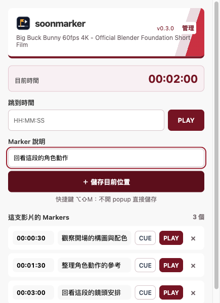
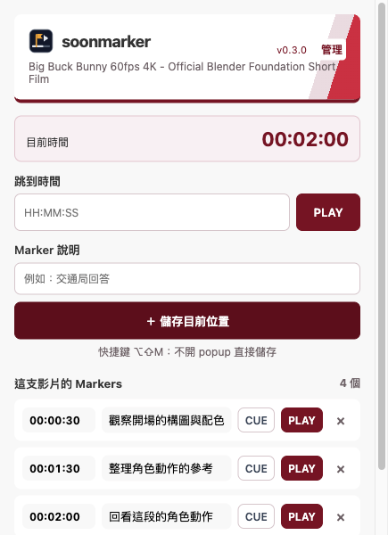

<!doctype html>
<html lang="zh-Hant">
<meta charset="utf-8">
<title>soonmarker：如何標記影片</title>
<style>
*{box-sizing:border-box}body{margin:0;width:1280px;height:800px;background:#f6f4f5;color:#33272c;font-family:system-ui,-apple-system,sans-serif}
header{height:104px;padding:28px 48px;display:flex;align-items:center;gap:14px;background:#720022;color:white}
header img{width:42px;height:42px}header strong{font-size:28px;letter-spacing:-1px}header span{margin-left:auto;font-size:18px}
main{display:grid;grid-template-columns:274px 435px 435px;gap:20px;padding:24px 48px}
aside{padding:20px 18px 0 0}h1{font-size:32px;line-height:1.4;margin:0 0 28px;letter-spacing:-1px}
ol{list-style:none;padding:0;margin:0;counter-reset:step}li{counter-increment:step;margin:0 0 26px;font-size:18px;line-height:1.65}li::before{content:counter(step);display:block;color:#90002b;font-size:14px;font-weight:800;margin-bottom:4px}
aside p{font-size:14px;line-height:1.7;color:#69545e;margin-top:32px}.shot h2{font-size:17px;margin:0 0 14px;height:26px;color:#720022}.shot img{display:block;width:435px;height:600px}
</style>
<header><strong>soonmarker</strong><span>看影片時，直接建立時間標記</span></header>
<main>
<aside><h1>記下這一刻，<br>下次直接回看。</h1><ol><li>在影片分頁，點開工具列的 soonmarker。</li><li>輸入 Marker 說明，按「＋ 儲存目前位置」。</li><li>標記出現在下方清單。按 CUE 定位，或按 PLAY 播放。</li></ol><p>儲存的是按下按鈕那一刻的影片時間。<br>可隨時修改時間與說明。</p></aside>
<section class="shot"><h2>① 輸入說明，儲存目前位置</h2></section>
<section class="shot"><h2>② 清單中出現新標記</h2></section>
</main>
</html>
